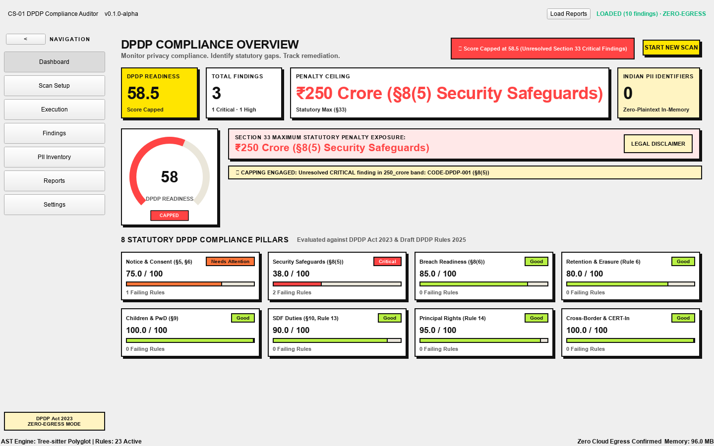
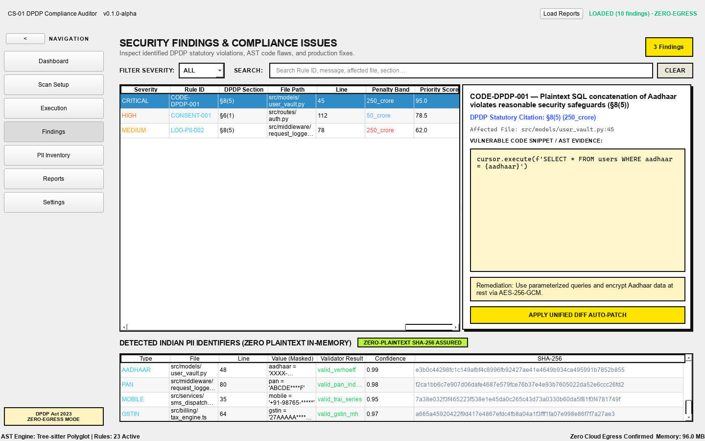
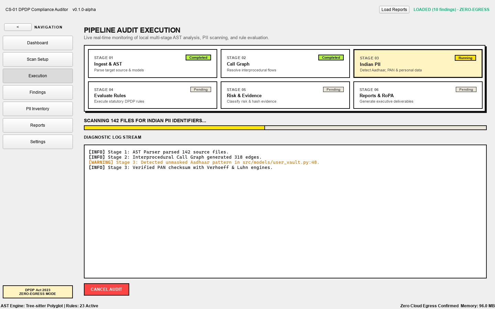
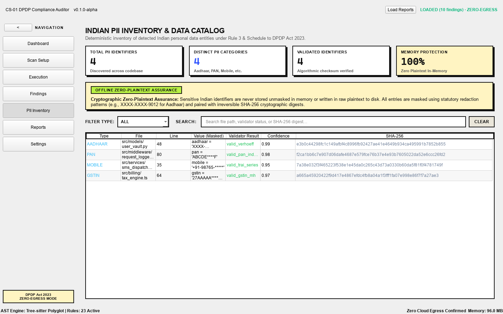
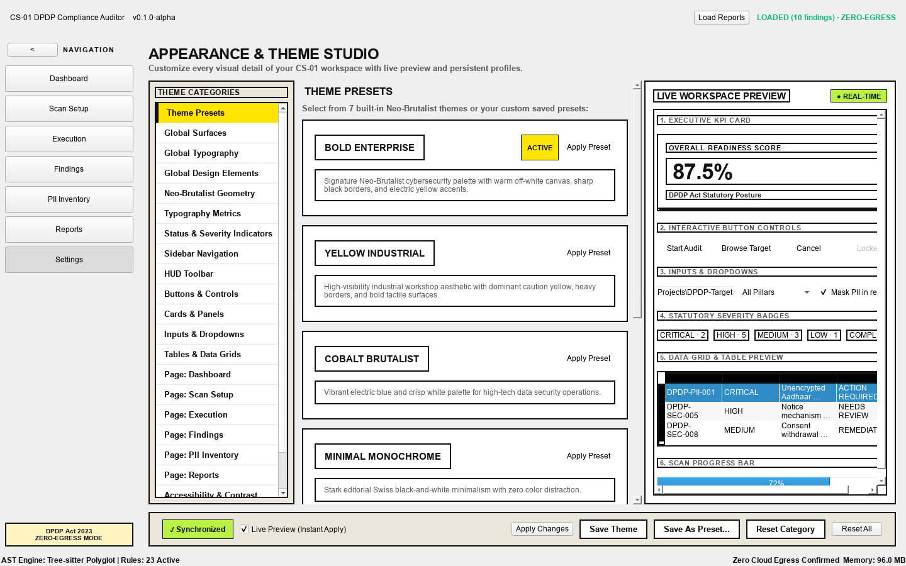

CS-01 DPDP Compliance Auditor
Enterprise-grade desktop static analysis application engineered for evaluating software codebases, database schemas, and cloud deployment manifests against India's Digital Personal Data Protection Act, 2023.
Neo-Brutalist Executive Desktop Command Center
High-DPI interface displaying real-time compliance posture, statutory capping, live console HUD, AST taint dossiers, and in-app report viewer.





About CS-01 DPDP Compliance Auditor
CS-01 is an enterprise-grade desktop static analysis and compliance auditing application specifically engineered to evaluate software codebases, database schemas, and cloud deployment manifests against India's Digital Personal Data Protection Act, 2023 (DPDP Act) and the DPDP Rules, 2025 (G.S.R. 846(E), Corr. G.S.R. 892(E), and RoD Order 2026).
Gain executive visibility into statutory exposure, readiness benchmarks, and pre-filled draft Records of Processing Activities (RoPA).
Enforce DPDP compliance gates in local and CI/CD pipelines, prevent personal data leakage, and maintain cryptographic audit trails.
Inspect intraprocedural AST walkthroughs, vulnerable code snippets, and apply instant one-click unified diff auto-patches.
Polyglot AST & Taint Flow
Tree-sitter syntactic AST parsing across Python, JS/TS, Go, Java, and SQLGlot schemas with interprocedural taint flow tracing into egress sinks.
Pure-Math Indian PII Engine
Verhoeff D₅ group math for Aadhaar, entity structure for PAN, Luhn mod-36 for GSTIN, TRAI allocations, and zero-plaintext in-memory protection.
8 Pillars & Unified Auto-Patches
Full coverage across Notice, Safeguards, Breach, Children, SDF, and Rights, with statutory readiness score capping and unified Git diff remediation.
Deterministic 6-Stage Compliance Pipeline
Executed entirely on local hardware via asynchronous background worker threads integrated directly with the PySide6 desktop GUI and headless CLI.
Ingest & Classify
Safe archive extraction with strict Zip-Slip path traversal protection. Language classification, framework detection, and discovery across local repositories or Git URLs.
Parse Polyglot ASTs
Syntactic Tree-sitter AST parsing across Python, JavaScript, TypeScript, Go, and Java. SQLGlot DDL parsing for PostgreSQL, MySQL, SQLite, Prisma, SQLAlchemy, and Terraform HCL2.
Detect Indian PII & Taint
Formal mathematical checksums: Verhoeff D₅ group permutations (Aadhaar), Luhn mod-36 (GSTIN), entity verification (PAN), and interprocedural taint flow tracing into egress sinks.
Evaluate Statutory Rules
Dual-engine evaluation: Pass A checks local file ASTs (BOLA, plain DTOs); Pass B analyzes whole-repository cross-file posture, storage limitation lifecycles, and cross-layer correlation.
Score & Classify Risk
Deduplicates findings, scores statutory severity, and calculates the 0–100 Readiness Score. Dynamically caps score at 58.5–60.0 whenever unresolved Critical violations exist in the ₹250 Cr band.
Generate 15 Deliverables
Synthesizes publication-grade A4 PDF reports (native Qt DirectWrite), 2D/3D Three.js data-flow cockpits, SARIF 2.1.0, GitLab SAST, RoPA maps, and Rule 13 tamper-evident ZIP evidence lockers.
Section 33 Schedule Liability Ceilings
CS-01 benchmarks every detected code flaw against India's DPDPA 2023 statutory penalty tiers, delivering empirical financial risk exposure for executive governance.
CS-01 generates production-ready compliance artifacts in the output directory (./cs01-reports/):
Built for Hack-A-Sol 5.0
CS-01 DPDP Compliance Auditor was engineered by Team ESPASAD during the 36-hour Hack-A-Sol 5.0 hackathon. Our purpose is to solve India's impending data privacy compliance challenge under DPDPA 2023 and the DPDP Rules 2025—giving engineering, DevSecOps, and legal governance teams a 100% offline, deterministic tool to proactively detect unbundled consent, sensitive Indian PII leaks (Aadhaar, PAN, GSTIN), and statutory exposure before code reaches production.
Questions & Answers
Everything you need to know about CS-01 DPDP Compliance Auditor, 100% offline zero-cloud scanning, algorithmic PII detection, and statutory AST remediation.
How does CS-01 detect statutory non-compliance in software projects? expand_more
Does any proprietary source code or personal data leave our machine? expand_more
XXXX-XXXX-9012 for Aadhaar, ABCDE****F for PAN) and paired with irreversible SHA-256 hashes.
How is statutory penalty exposure and readiness score capping calculated? expand_more
Can CS-01 automatically remediate detected violations? expand_more
.patch files. These patches implement compliant remediation patterns—including unbundling affirmative consent checkboxes (§6), injecting multilingual purpose notices, adding parameterized SQL sanitizers, and wrapping sensitive data stores with AES-256-GCM encryption.
How are Indian PII identifiers validated without false positives? expand_more
What compliance deliverables and evidence artifacts does CS-01 produce? expand_more
How do I run and integrate CS-01 across desktop and CI/CD environments? expand_more
cs01-gui.exe desktop GUI with 7 Neo-Brutalist themes and built-in Markdown viewer, and cs01.exe CLI). For CI/CD pipelines (GitHub Actions, GitLab CI, Jenkins), simply invoke cs01 scan <path> --fail-on high to deterministically enforce statutory compliance gates and block non-compliant PRs before merge.
Get Started with CS-01
Download the native desktop binaries or inspect the open-source repository.
Windows 10 / 11 64-bit architecture (Zero Python setup required)
Explore the Tree-sitter engine, 225 unit tests & statutory rules